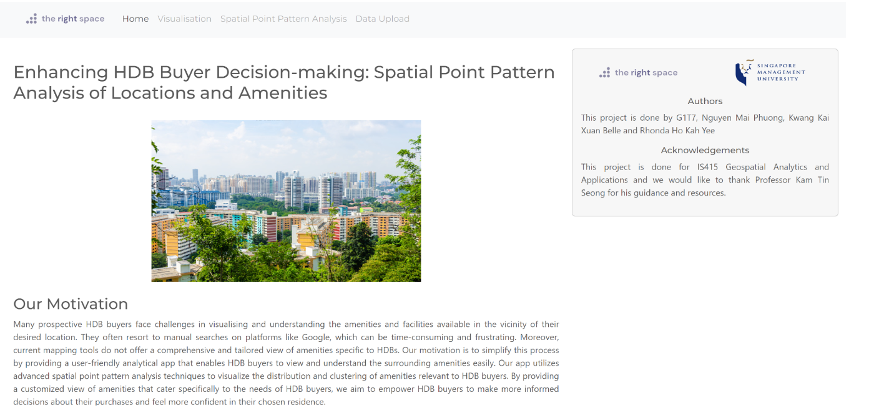
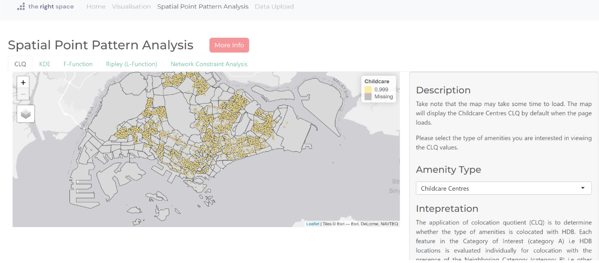

User Guide for Our Shiny Application - The Right Place
Welcome to the user guide for our application! When you first visit our application, you will see the homepage where we introduce the motivation behind our application, the authors and our acknowledgments.

From there, you can find a navigation bar that allows you to easily switch between different pages. These pages include:
Visualization page: Here, you can observe the mapping of HDB flats and relevant amenities in Singapore.

By default, the page will show the mapping of an overview of the HDB locations in Singapore.
There are two dropdown lists for users to filter the visualisation.
The first dropdown allow users to filter visualisation of HDB flats and the relevant amenities.
The second dropdown allows users to filter the resale flat price ranges of the HDB flats they are interested in.
Spatial Point Analysis: In this page, we offer several tools designed to help you analyze the spatial distribution of points in your dataset. Our tools include Local Colocation Quotient Analysis (CLQ), Kernel Density Estimation (KDE), F-Function, Ripley L-Function, and Network Constraint Analysis. To access these tools, simply click on the five tabs located at the top of the page. Each tool provides a unique perspective on the spatial patterns in your data, allowing you to gain valuable insights into the underlying processes driving your observations.
Local Colocation Quotient Analysis (CLQ)
By default, it will show the CLQ map for childcare centres.
Users can filter the CLQ maps based on the amenity type.
Kernel Density Estimation (KDE)
By default, it will show nothing until the user press the “Plot KDE graph” button.
Users can compute the KDE based on the amenity type, bandwidth type and kernel type.
Please take note that the KDE may take a while to compute and appear.
F-Function
By default, it will show nothing until the user press the “Plot F-function graph” button.
Users can compute and plot the F-function based on an area of their choice.
Please take note that the F-function graph may take a while to compute and appear.
Ripley L-Function
 - By default, it will show nothing until the user press the "Plot L-function graph" button. - Users can compute and plot the L-function based on an area of their choice. - Please take note that the L-function graph may take a while to compute and appear.Network Constraint Analysis

By default, it will show the lixel plot and K-function graph of area, Bedok and Amenity Type, Childcare.
Users select the the area of their choice and the amenity type.
Data Upload: Here, users can upload their data of an amenity in rds format. The uploaded data will then be available as an option under the visualisation page’s “What would you like to view?” drop-down list.

By clicking the “Browse button”, users can upload a rds file of any amenity they would like to visualise.
By clicking the “Preview Data”, users can see the top 10 rows of the rds file they uploaded.
We hope you find our application useful for your spatial data analysis needs. If you have any questions or feedback, please feel free to contact us though our github.